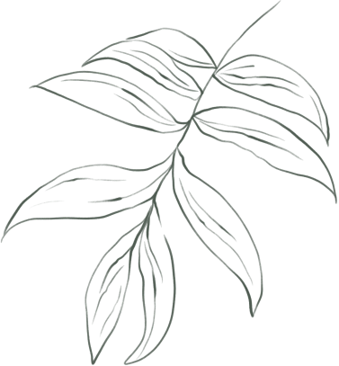

Especies exóticas invasoras
Mapa de especies invasoras
Descubre dónde las hemos encontrado
y ayúdanos a localizar nuevas.
“Conocemos el territorio.
Entre todos lo seguimos descubriendo.”
Aún no hay nuevos reportes.
¿Has encontrado una especie invasora? Hazle una foto y ayúdanos a completar el mapa.
Observaciones históricas de Ramales
Ayúdanos a completar el mapa
¿Has encontrado una especie invasora en Ramales? Hazle una foto y envíanos tu observación.
📷 Enviar un reporteCada nuevo reporte nos ayuda a conocer mejor nuestro entorno.

Estatus en Cantabria
Nombre científico
¿Cómo reconocerla?
Posible confusión
Hojas, flores y frutos
Floración y fructificación
Características
Hábitat
Distribución
Biología y ecología
Importancia en Cantabria
Curiosidades
¿Por qué es invasora?
Pendiente de verificar
Fuentes
Esta especie todavía no está en nuestro catálogo.
Estamos trabajando para ampliar la guía botánica de Ramales Natural.